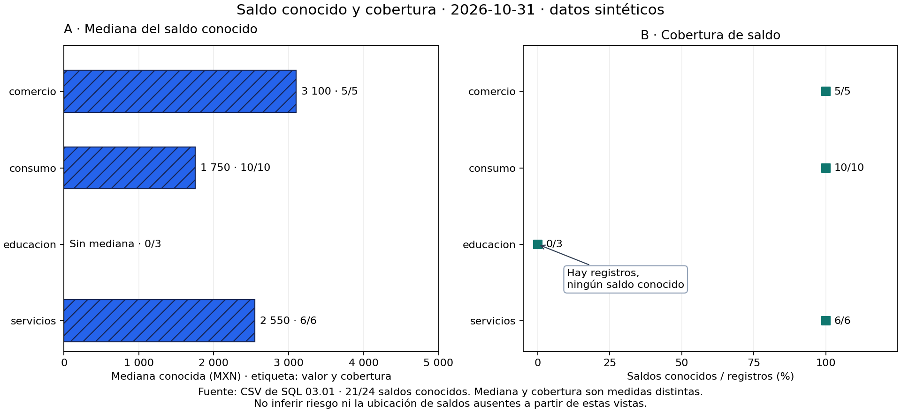
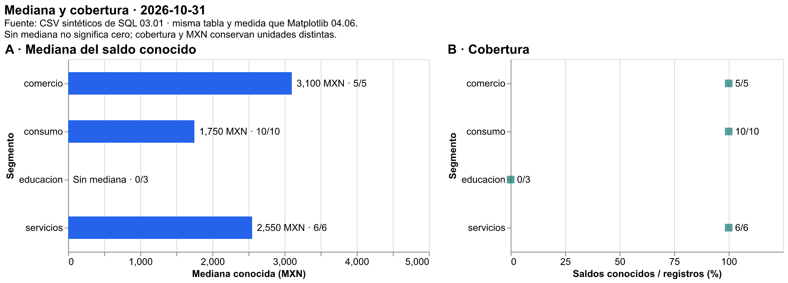

04.09 — Cierre visual del análisis
MÓDULO 04 / 04.09
Contenido / Visualización en Python
Inicio / Módulo 04 / Lección 04.09
| Tu sesión | Qué prepararás o comprobarás |
|---|---|
| Meta | Entregar y reconstruir figuras conciliadas con una interpretación propia |
| Necesitas | Pandas, Matplotlib y Altair; interacción y exportación ampliada opcionales |
| Evidencia | Tablas, figuras, interpretación e instrucciones comprobadas |
Preparación · Material de apoyo · Ir al lab · Comprobar
Propósito
Entregar un resultado que otra persona pueda leer, comprobar y reconstruir: una pregunta concreta, indicadores conciliados, una figura estática, una vista declarativa y una interpretación que reconozca sus límites. El cierre conecta las decisiones de visualización con una entrega completa.
Antes de empezar
Completa 04.01 — Pregunta y elección, las prácticas Matplotlib hasta 04.06 y 04.07 — Altair declarativo, con sus labs y prerrequisitos de pandas/SQL. 04.08 — Interacción es opcional y no bloquea este cierre. No necesitas notebook, Quarto, aplicación web ni publicación en línea.
Práctica de cierre: datos, figuras, texto y reconstrucción. Extensión: HTML sin conexión y un explorador con estado explícito. Organizar paquetes, logging, pruebas formales y contratos corresponde a Python aplicado, módulo 05.
Qué vas a aprender
- Relacionar pregunta, población, unidad, indicador y representación.
- Conciliar valores y ausencias contra una referencia independiente.
- Comparar Matplotlib y Altair sobre la misma tabla sin cambiar la medida.
- Escribir un hallazgo con evidencia, cobertura y límites.
- Reconstruir desde las fuentes y revisar una entrega fuera de la sesión original.
Material de apoyo
| Recurso | Para qué sirve | Uso |
|---|---|---|
| Script de cierre | Reconstruir tablas, figuras y nota de entrega | Para el cierre |
| Fuentes de SQL | Consultar créditos y cortes originales | Entradas compartidas |
| Figura Matplotlib | Leer la composición estática de referencia | Para observar |
| Figura Altair | Contrastar la misma tabla en otra representación | Para observar |


Las figuras incluidas sirven para observar y contrastar. Abre el script cuando el recorrido lo indique para regenerar o practicar; conserva las fuentes y las entregas anteriores y utiliza los destinos de práctica indicados.
Contexto y datos del recorrido
Pregunta de ejemplo: ¿qué mediana de saldo conocido tiene cada segmento en octubre de 2026 y con qué cobertura? Público: una persona que revisa el análisis y no escribió el código. Unidad: un crédito en un corte; mediana en MXN y cobertura como saldos conocidos / registros del segmento.
El script closure.py reutiliza lectura y tablas de 04.07, la composición de 04.06 y, solo si se pide, el menú de 04.08. Las fuentes son cortes.csv y creditos.csv sintéticos de SQL 03.01. La relación crédito → segmento basta para esta pregunta; no se necesita copiar clientes.csv ni recrear SQLite. Se conservan fuentes, reglas y entregas previas.
Versiones comprobadas: pandas 2.3.3, Matplotlib 3.10.7, Altair 6.3.0 y vl-convert-python 1.9.0.post1 para exportación ampliada. No se agregan dependencias. Son referencias del curso, no una afirmación de ser las más recientes.
1. Qué debe poder hacer quien recibe el resultado
Una figura puede ser correcta y aun así dejar preguntas sin respuesta: ¿de qué fecha?, ¿saldo total o mediana?, ¿qué pasó con los ausentes?, ¿cómo se reconstruye? La entrega responde esas preguntas con piezas conectadas.
| Pieza | Responsabilidad | Comprobación |
|---|---|---|
| Pregunta y ficha | Definir público, fecha, población, unidad y medida | Explicar qué representa cada fila y marca |
| Fuentes conservadas | Permitir reproducir el mismo corte | Conservar IDs, valores y ausencias |
| Tabla de indicadores | Hacer visibles números y bases | Conciliar contra los CSV |
| Figuras | Comunicar la medida y su cobertura | Cotejar ejes, etiquetas y mensajes con la tabla |
| Interpretación | Afirmar solo lo que sostienen los datos | Vincular cada hallazgo con valores y límites |
| Instrucciones | Permitir reconstrucción y revisión independiente | Ejecutar en otra carpeta con el entorno elegido |
flowchart LR
A[Pregunta y fuentes] --> B[Tabla comprobada]
A --> C[Referencia independiente CSV]
B --> D[Conciliar valores y ausencias]
C --> D
D --> E[Matplotlib y Altair]
E --> F[Interpretación y entrega]
F --> G[Reconstruir, revisar y explicar]Sin renderizador: primero se define la pregunta y se conservan las fuentes. El análisis y una referencia por otro camino calculan los mismos indicadores. Solo después de conciliarlos se construyen figuras, texto e instrucciones; otra persona reconstruye y coteja el resultado.
Reconstruir significa obtener las mismas filas, valores, ausencias y bases siguiendo el procedimiento. No exige PNG con bytes idénticos: motores, fuentes tipográficas o metadatos pueden variar. Esa diferencia no autoriza otra mediana, otro denominador ni una figura ilegible.
2. Conciliar antes de dibujar
Para octubre la base comprobada es:
| Segmento | Registros | Saldos conocidos | Mediana (MXN) | Cobertura |
|---|---|---|---|---|
| comercio | 5 | 5 | 3100 | 100 % |
| consumo | 10 | 10 | 1750 | 100 % |
| educacion | 3 | 0 | Sin mediana | 0 % |
| servicios | 6 | 6 | 2550 | 100 % |
| Todos | 24 | 21 | 2300 | 87,5 % |
La mediana global se calcula desde los 21 saldos conocidos. No se obtiene sumando ni tomando la mediana de las medianas de segmentos. La cobertura global es 21/24, no el promedio simple de los cuatro porcentajes.
El script calcula el análisis con las funciones de pandas ya estudiadas. Su referencia lee los CSV mediante csv.DictReader, relaciona el segmento por ID y calcula medianas con statistics.median, de la biblioteca estándar. No utiliza el resumen de pandas como entrada de la referencia. Revisar una tabla contra una copia de sí misma no sería una comprobación independiente.
statistics.median ordena valores para obtener el central o la media de los dos centrales. Requiere valores conocidos: con lista vacía no calculamos una mediana. No enviamos ausencias como NaN ni sustituimos el campo vacío por cero. El texto "0" en el CSV sí se convierte a un saldo válido. Revisa lectura CSV de 01.05 y ausencias de 02.05.
Desde la carpeta de esta lección, con el entorno elegido, puedes inspeccionar las piezas sin exportar nada:
from closure import read_detail, prepare, reference, reconcile, SOURCE
tablas = prepare(read_detail(), "2026-10-31")
esperado = reference(SOURCE, "2026-10-31")
indicadores, comprobaciones = reconcile(tablas["resumen"], tablas["corte"], esperado)
print(indicadores[["segmento", "registros", "conocidos", "mediana_mxn"]])
print(comprobaciones["coincide"].all())Resultado: los cinco grupos de la tabla anterior y True. Hay 20 comprobaciones: cuatro campos — registros, conocidos, mediana y cobertura — por cinco grupos. conciliacion.csv conserva ambos valores y el resultado de cada comparación. Dos ausencias de la misma medida pueden coincidir; ausencia y cero no coinciden. Los conteos deben conciliar y los porcentajes admiten una tolerancia numérica muy pequeña por representación decimal; no se usa para justificar diferencias analíticas. Una discrepancia detiene la entrega antes de crear su carpeta.
Conciliar datos no certifica todas las decisiones: una figura podría usar el campo equivocado aunque la tabla sea correcta. Por eso después se revisan representación e interpretación, como en 04.01 y 04.05.
3. Una tabla, dos representaciones

La figura estática usa barras de mediana y puntos de cobertura. Mantiene origen cero en las barras, categorías comunes y unidades horizontales separadas. La trama, el texto y los conteos ayudan a leerla sin depender solo del color. Educación conserva su posición y el mensaje de ausencia.

La vista declarativa representa el mismo resumen.csv. Las capas de texto no agregan otra medida, y el panel de cobertura usa su propio eje. Cambiar el motor puede modificar apariencia, distribución de espacio o formatos; comprueba valores, unidades y mensajes antes de comparar longitudes. Las figuras reutilizan los criterios de 04.05 y 04.06.
La entrega básica ya contiene PNG/SVG de Matplotlib y HTML/JSON de Altair. Las imágenes Altair curadas de esta lección se generaron con la extensión –bundle; producirlas no es requisito adicional del cierre básico.
4. Interpretación: hallazgo, evidencia y límite
Una interpretación útil combina tres piezas, sin convertir observación en causa:
- Hallazgo: «Entre los segmentos con saldo conocido, comercio tiene la mayor mediana en octubre».
- Evidencia y base: «3100 MXN sobre 5/5 saldos conocidos; consumo tiene 1750 sobre 10/10 y servicios 2550 sobre 6/6».
- Límite: «Educación tiene tres registros sin saldo conocido; no podemos ordenar su mediana ni inferir riesgo real con esta muestra ficticia».
No escribir «educación tiene saldo cero», «comercio es más riesgoso» ni «el saldo de cada crédito creció». La pregunta compara medianas disponibles en un corte; no afirma totales, causa ni cambios individuales. Cobertura 0 % no ubica los saldos ausentes en la escala.
El script genera informe.md con ficha, tabla, lectura, límites y enlaces relativos a las figuras. Es un punto de partida para revisar, no una acreditación automática de comprensión. Debes escribir una interpretación propia, cotejar sus cifras y explicar por qué elegiste esa representación. En un corte sin saldos conocidos, el informe no inventa un segmento ganador. En un corte sin registros informa que mediana y cobertura no están definidas.
5. Preparar, ejecutar y reconstruir
Usa el gestor elegido en 00.05 y las dependencias ya preparadas en 04.07. No hay paquetes nuevos. No instales en base ni mezcles gestores. Si el entorno ya funciona, comprueba versiones.
PowerShell
Desde la raíz, con Conda O venv/pip activado:
python -c "import pandas, matplotlib, altair; print(pandas.__version__, matplotlib.__version__, altair.__version__)"
python curriculum/04_visualization_python/09_visual_closure/closure.py --output curriculum/04_visualization_python/09_visual_closure/output/octubre
# Reconstrucción desde las copias conservadas, en otra carpeta:
python curriculum/04_visualization_python/09_visual_closure/closure.py --source curriculum/04_visualization_python/09_visual_closure/output/octubre/fuentes --output curriculum/04_visualization_python/09_visual_closure/output/reconstruida
# Extensiones, con convertidor ya preparado en 04.07 y carpeta nueva:
python curriculum/04_visualization_python/09_visual_closure/closure.py --bundle --interactive --output curriculum/04_visualization_python/09_visual_closure/output/ampliadaRecorrido alternativo uv, sin los gestores anteriores:
uv sync --locked
uv run --locked python curriculum/04_visualization_python/09_visual_closure/closure.py --output curriculum/04_visualization_python/09_visual_closure/output/octubre
uv run --locked python curriculum/04_visualization_python/09_visual_closure/closure.py --source curriculum/04_visualization_python/09_visual_closure/output/octubre/fuentes --output curriculum/04_visualization_python/09_visual_closure/output/reconstruida
# Extensiones opcionales:
uv sync --locked --group chart-export
uv run --locked --group chart-export python curriculum/04_visualization_python/09_visual_closure/closure.py --bundle --interactive --output curriculum/04_visualization_python/09_visual_closure/output/ampliadaBash/Zsh
Desde la raíz, con Conda O venv/pip activado:
python -c "import pandas, matplotlib, altair; print(pandas.__version__, matplotlib.__version__, altair.__version__)"
python curriculum/04_visualization_python/09_visual_closure/closure.py --output curriculum/04_visualization_python/09_visual_closure/output/octubre
python curriculum/04_visualization_python/09_visual_closure/closure.py --source curriculum/04_visualization_python/09_visual_closure/output/octubre/fuentes --output curriculum/04_visualization_python/09_visual_closure/output/reconstruida
# Extensiones: convertidor ya preparado y carpeta nueva.
python curriculum/04_visualization_python/09_visual_closure/closure.py --bundle --interactive --output curriculum/04_visualization_python/09_visual_closure/output/ampliadaRecorrido alternativo uv:
uv sync --locked
uv run --locked python curriculum/04_visualization_python/09_visual_closure/closure.py --output curriculum/04_visualization_python/09_visual_closure/output/octubre
uv run --locked python curriculum/04_visualization_python/09_visual_closure/closure.py --source curriculum/04_visualization_python/09_visual_closure/output/octubre/fuentes --output curriculum/04_visualization_python/09_visual_closure/output/reconstruida
# Extensiones opcionales:
uv sync --locked --group chart-export
uv run --locked --group chart-export python curriculum/04_visualization_python/09_visual_closure/closure.py --bundle --interactive --output curriculum/04_visualization_python/09_visual_closure/output/ampliadaCMD / Anaconda Prompt
Desde la raíz y con el entorno Conda activado:
python -c "import pandas, matplotlib, altair; print(pandas.__version__, matplotlib.__version__, altair.__version__)"
python curriculum/04_visualization_python/09_visual_closure/closure.py --output curriculum/04_visualization_python/09_visual_closure/output/octubre
python curriculum/04_visualization_python/09_visual_closure/closure.py --source curriculum/04_visualization_python/09_visual_closure/output/octubre/fuentes --output curriculum/04_visualization_python/09_visual_closure/output/reconstruida
REM Extensiones: convertidor preparado y carpeta nueva.
python curriculum/04_visualization_python/09_visual_closure/closure.py --bundle --interactive --output curriculum/04_visualization_python/09_visual_closure/output/ampliada–source indica una carpeta con cortes.csv y creditos.csv; por defecto utiliza los originales del curso. Las copias de fuentes/ conservan ambos cortes y la relación de segmentos: corte.csv contiene solo la fecha seleccionada y no reemplaza esas entradas. –cut permite otra fecha con formato YYYY-MM-DD. –dpi cambia resolución del PNG Matplotlib y exige entero positivo. Cada ejecución requiere carpeta nueva y conserva las anteriores.
6. Revisar la entrega completa
| Archivo | Qué aporta |
|---|---|
| fuentes/cortes.csv, fuentes/creditos.csv | Copias exactas de entradas sintéticas |
| corte.csv, resumen.csv | Detalle seleccionado y tabla usada por ambas figuras |
| referencia_csv.csv, indicadores.csv | Referencia independiente y resultado incluido el global |
| conciliacion.csv | Veinte comparaciones de valores y ausencias |
| matplotlib.png, matplotlib.svg, formatos.csv | Figura estática y registro de dimensiones |
| altair.html, altair.json | Vista declarativa y especificación con datos |
| informe.md, RECONSTRUIR.md | Lectura e instrucciones de reconstrucción/revisión |
| entrega.json | Corte, opciones y versiones usadas; revisión visual pendiente |
–bundle incorpora bibliotecas al HTML y añade altair.png/svg. –interactive añade explorador.html/json de 04.08; no altera la figura principal ni sus medianas. El HTML básico requiere conexión; el incorporado puede abrirse sin red con estos datos. JSON no es una imagen, y un visor que bloquee JavaScript puede no dibujar HTML aunque los valores sean correctos.
Para leer informe.md con sus enlaces, conserva la carpeta completa. Para reconstruir necesitas también el repositorio con los scripts de 04.06–04.09 y el entorno adecuado; copiar solo la carpeta de salida no incluye automáticamente el código ni instala paquetes. Git es útil para identificar una revisión, pero el material también debe funcionar desde ZIP.
entrega.json se escribe después de los guardados. Su presencia no certifica que nadie borró archivos después ni que la interpretación sea correcta. Una ejecución interrumpida puede dejar una carpeta parcial: revisa archivos, abre figuras y registra lo ocurrido antes de presentar una entrega.
En la revisión independiente:
- Abre el informe sin consultar la memoria de quien lo creó; identifica pregunta, fuente, fecha, unidad, medida y población.
- Coteja la tabla con fuentes, indicadores y conciliación; distingue cero, ausencias y grupos vacíos.
- Abre PNG/SVG y HTML; comprueba posiciones, mensajes, ejes y legibilidad.
- Reconstruye usando las copias y otra carpeta; compara valores y bases.
- Explica un hallazgo y un límite con tus palabras, y registra evidencia.
Si añades interacción, conserva estado inicial, opción elegida y base de cualquier captura. Un menú cambia la vista en el navegador, no los CSV. Una imagen estática no conserva controles funcionales. Son criterios de 04.08 y no requisitos de este cierre.
Práctica
Realiza el lab 04.09 para reconstruir una entrega visual y explicar hallazgo, cobertura y límites.
Evidencia y criterio de salida
| Conserva | Comprueba | Explica |
|---|---|---|
| Tablas, código y figuras de tu entrega | Indicadores, ausencias y representaciones conciliados | Cómo se conectan pregunta, población, unidad y figura |
| Interpretación e instrucciones de reconstrucción | Otra persona puede reconstruir en un destino nuevo | Qué evidencia respalda el hallazgo y qué sigue limitado por la cobertura |
Puedes cerrar el módulo cuando reconstruyas la entrega, concilies indicadores, justifiques representación y ausencias, y expliques hallazgo y límites. La interacción de 04.08 no es requisito de este cierre.
Quien aprende realiza y explica la práctica; su compañero revisa. Tu compañero reconstruye la entrega y elige una marca para rastrearla hasta su tabla y fuente. Guarda evidencia, ayudas y dudas en una nota personal junto a tu práctica. PROGRESS.md conserva el desarrollo editorial; disponer del material no acredita por sí solo aprendizaje completado.
No hay proyecto ni checkpoint implementado asociado a esta lección.
Referencias
Ejemplos, datos, código y figuras propios de DS Track. Las APIs reutilizadas se comprobaron con las versiones del curso. Se consultaron fuentes primarias de los equipos Python, Matplotlib y Vega-Altair; no se copiaron capítulos ni figuras de sus galerías. Las páginas stable pueden mostrar otras versiones.
Siguiente paso
Después de la práctica y su comprobación, continúa con 05.01 — Del notebook a módulos.
El siguiente módulo organiza el análisis y sus responsabilidades; no necesitas dominar clases ni decoradores antes de comenzar.